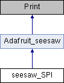

#include <seesaw_spi.h>
Inheritance diagram for seesaw_SPI:

Public Member Functions | |
| seesaw_SPI (TwoWire *wire=NULL) | |
| Construct a bridge using an I2C bus. More... | |
| bool | beginSPI (uint32_t frequency=1000000, uint8_t mode=0, bool lsbFirst=false) |
| Configure the controller after the inherited begin() succeeds. More... | |
| bool | transfer (const uint8_t *tx, uint8_t *rx, size_t length, bool beginTransaction=true, bool endTransaction=true) |
| Transfer an arbitrary-length buffer using bounded I2C chunks. More... | |
| bool | abortSPI (bool releasePins=true) |
| Abort the current transaction and clear the device error/RX state. More... | |
| uint32_t | getSPIClockFrequency () |
| Read the actual divided SPI clock from the peripheral. More... | |
| uint8_t | getLastSPIError () |
| Report the last SPI operation's device or host-side error. More... | |
 Public Member Functions inherited from Adafruit_seesaw Public Member Functions inherited from Adafruit_seesaw | |
| Adafruit_seesaw (TwoWire *Wi=NULL) | |
| Create a seesaw object on a given I2C bus. More... | |
| bool | begin (uint8_t addr=SEESAW_ADDRESS, int8_t flow=-1, bool reset=true) |
| Start the seesaw. More... | |
| uint32_t | getOptions () |
| Returns the available options compiled into the seesaw firmware. More... | |
| uint32_t | getVersion () |
| Returns the version of the seesaw. More... | |
| bool | getProdDatecode (uint16_t *pid, uint8_t *year, uint8_t *mon, uint8_t *day) |
| Returns the version of the seesaw. More... | |
| bool | SWReset () |
| perform a software reset. This resets all seesaw registers to their default values. This is called automatically from Adafruit_seesaw.begin() More... | |
| void | pinMode (uint8_t pin, uint8_t mode) |
| Set the mode of a GPIO pin. More... | |
| void | pinModeBulk (uint32_t pins, uint8_t mode) |
| set the mode of multiple GPIO pins at once. More... | |
| void | pinModeBulk (uint32_t pinsa, uint32_t pinsb, uint8_t mode) |
| set the mode of multiple GPIO pins at once. This supports both ports A and B. More... | |
| virtual void | analogWrite (uint8_t pin, uint16_t value, uint8_t width=8) |
| write a PWM value to a PWM-enabled pin More... | |
| void | digitalWrite (uint8_t pin, uint8_t value) |
| Set the output of a GPIO pin. More... | |
| void | digitalWriteBulk (uint32_t port_values) |
| write the entire GPIO port at once. More... | |
| void | digitalWriteBulk (uint32_t pins, uint8_t value) |
| write a value to multiple GPIO pins at once. More... | |
| void | digitalWriteBulk (uint32_t pinsa, uint32_t pinsb, uint8_t value) |
| write a value to multiple GPIO pins at once. This supports both ports A and B More... | |
| bool | digitalRead (uint8_t pin) |
| Read the current status of a GPIO pin. More... | |
| uint32_t | digitalReadBulk (uint32_t pins) |
| read the status of multiple pins on port A. More... | |
| uint32_t | digitalReadBulkB (uint32_t pins) |
| read the status of multiple pins on port B. More... | |
| void | setGPIOInterrupts (uint32_t pins, bool enabled) |
| Enable or disable GPIO interrupts on the passed pins. More... | |
| virtual uint16_t | analogRead (uint8_t pin) |
| read the analog value on an ADC-enabled pin. More... | |
| uint16_t | touchRead (uint8_t pin) |
| read the analog value on an capacitive touch-enabled pin. More... | |
| virtual void | setPWMFreq (uint8_t pin, uint16_t freq) |
| set the PWM frequency of a PWM-enabled pin. Note that on SAMD09, SAMD11 boards the frequency will be mapped to closest match fixed frequencies. Also note that PWM pins 4 and 5 share a timer, and PWM pins 6 and 7 share a timer. Changing the frequency for one pin will change the frequency for the other pin that is on the timer. More... | |
| void | enableSercomDataRdyInterrupt (uint8_t sercom=0) |
| Enable the data ready interrupt on the passed sercom. Note that both the interrupt module and the passed sercom must be compiled into the seesaw firmware for this to function. If both of these things are true, the interrupt pin on the seesaw will fire when there is data to be read from the passed sercom. On the default seesaw firmeare on the SAMD09 breakout, no sercoms are enabled. More... | |
| void | disableSercomDataRdyInterrupt (uint8_t sercom=0) |
| Disable the data ready interrupt on the passed sercom. More... | |
| char | readSercomData (uint8_t sercom=0) |
| Reads a character from the passed sercom if one is available. Note that on the default seesaw firmware on the SAMD09 breakout no sercoms are enabled. More... | |
| void | EEPROMWrite8 (uint8_t addr, uint8_t val) |
| Write a 1 byte to an EEPROM address. More... | |
| void | EEPROMWrite (uint8_t addr, uint8_t *buf, uint8_t size) |
| write a string of bytes to EEPROM starting at the passed address More... | |
| uint8_t | EEPROMRead8 (uint8_t addr) |
| Read 1 byte from the specified EEPROM address. More... | |
| void | setI2CAddr (uint8_t addr) |
| Set the seesaw I2C address and call begin() with the new address. More... | |
| uint8_t | getI2CAddr () |
| Read the I2C address of the seesaw. More... | |
| void | UARTSetBaud (uint32_t baud) |
| Set the baud rate on SERCOM0. More... | |
| void | setKeypadEvent (uint8_t key, uint8_t edge, bool enable=true) |
| activate or deactivate a key and edge on the keypad module More... | |
| void | enableKeypadInterrupt () |
| enable the keypad interrupt that fires when events are in the fifo. | |
| void | disableKeypadInterrupt () |
| disable the keypad interrupt that fires when events are in the fifo. | |
| uint8_t | getKeypadCount () |
| Get the number of events currently in the fifo. More... | |
| bool | readKeypad (keyEventRaw *buf, uint8_t count) |
| Read all keyEvents into the passed buffer. More... | |
| float | getTemp () |
| Read the temperature of the seesaw board in degrees Celsius. NOTE: not all seesaw firmwares have the temperature sensor enabled. More... | |
| int32_t | getEncoderPosition (uint8_t encoder=0) |
| Read the current position of the encoder. More... | |
| int32_t | getEncoderDelta (uint8_t encoder=0) |
| Read the change in encoder position since it was last read. More... | |
| bool | enableEncoderInterrupt (uint8_t encoder=0) |
| Enable the interrupt to fire when the encoder changes position. More... | |
| bool | disableEncoderInterrupt (uint8_t encoder=0) |
| Disable the interrupt from firing when the encoder changes position. More... | |
| void | setEncoderPosition (int32_t pos, uint8_t encoder=0) |
| Set the current position of the encoder. More... | |
| virtual size_t | write (uint8_t) override |
| The print wrapper for the seesaw class. Calling this allows you to use ss.print() or ss.println() and write to the UART on SERCOM0 of the seesaw. Note that this functionality is only available when the UART (sercom) module is compiled into the seesaw firmware. On the default seesaw firmware on the SAMD09 breakout this functionality is not available. More... | |
| virtual size_t | write (const char *str) |
| The print wrapper for the seesaw class allowing the user to print a string. Calling this allows you to use ss.print() or ss.println() and write to the UART on SERCOM0 of the seesaw. Note that this functionality is only available when the UART (sercom) module is compiled into the seesaw firmware. On the default seesaw firmware on the SAMD09 breakout this functionality is not available. More... | |
Additional Inherited Members | |
| Protected Member Functions inherited from Adafruit_seesaw | |
| uint8_t | getI2CaddrEEPROMloc () |
| Return the EEPROM address used to store I2C address. More... | |
| bool | write8 (byte regHigh, byte regLow, byte value) |
| Write 1 byte to the specified seesaw register. More... | |
| uint8_t | read8 (byte regHigh, byte regLow, uint16_t delay=250) |
| read 1 byte from the specified seesaw register. More... | |
| bool | read (uint8_t regHigh, uint8_t regLow, uint8_t *buf, uint8_t num, uint16_t delay=250) |
| Read a specified number of bytes into a buffer from the seesaw. More... | |
| bool | write (uint8_t regHigh, uint8_t regLow, uint8_t *buf, uint8_t num) |
| Write a specified number of bytes to the seesaw from the passed buffer. More... | |
| Protected Attributes inherited from Adafruit_seesaw | |
| TwoWire * | _i2cbus |
| Adafruit_I2CDevice * | _i2c_dev = NULL |
| The BusIO device for I2C control. | |
| int8_t | _flow |
| uint8_t | _hardwaretype = 0 |
| sercom_inten | _sercom_inten |
| sercom interrupt enable register instance | |
Detailed Description
Chunked hardware SPI controller accessed through seesaw I2C registers. Call inherited begin() before beginSPI(). The peripheral firmware selects
CS, SCK, MISO, and MOSI pins; D/C, reset, and BUSY use separate GPIOs.
Constructor & Destructor Documentation
◆ seesaw_SPI()
| seesaw_SPI::seesaw_SPI | ( | TwoWire * | wire = NULL | ) |
Construct a bridge using an I2C bus.
- Parameters
-
wire I2C bus, or NULL for the default Wire instance.
Member Function Documentation
◆ beginSPI()
| bool seesaw_SPI::beginSPI | ( | uint32_t | frequency = 1000000, |
| uint8_t | mode = 0, |
||
| bool | lsbFirst = false |
||
| ) |
Configure the controller after the inherited begin() succeeds.
- Parameters
-
frequency Maximum requested SPI clock, 187500 to 24000000 Hz on C0
targets, or 250000 to 32000000 Hz on G071. The actual clock is rounded down to a hardware divisor; query it separately.
- Parameters
-
mode SPI mode 0, 1, 2, or 3. lsbFirst True for least-significant-bit first; false for MSB first.
- Returns
- True if the device accepted the configuration.
◆ transfer()
| bool seesaw_SPI::transfer | ( | const uint8_t * | tx, |
| uint8_t * | rx, | ||
| size_t | length, | ||
| bool | beginTransaction = true, |
||
| bool | endTransaction = true |
||
| ) |
Transfer an arbitrary-length buffer using bounded I2C chunks.
- Parameters
-
tx Transmit bytes, or NULL to send 0xFF while reading. rx Receive destination, or NULL to discard received data. length Number of bytes; zero can assert/release CS without clocking. beginTransaction Assert CS before the first chunk. False continues a transaction started by an earlier call. endTransaction Release CS after the last chunk. False keeps CS low so callers can change a separate D/C GPIO or send another buffer.
- Returns
- True if every chunk completed. Failure attempts to release CS/pins; a disconnected I2C bus can prevent cleanup, so restore communication before assuming the peripheral is idle. Inspect getLastSPIError() for the cause.
◆ abortSPI()
| bool seesaw_SPI::abortSPI | ( | bool | releasePins = true | ) |
Abort the current transaction and clear the device error/RX state.
- Parameters
-
releasePins True also disables SPI and returns its pins to inputs.
- Returns
- True when the abort completed successfully.
◆ getSPIClockFrequency()
| uint32_t seesaw_SPI::getSPIClockFrequency | ( | ) |
Read the actual divided SPI clock from the peripheral.
- Returns
- Clock in hertz, or 0 when disabled or the read failed.
◆ getLastSPIError()
| uint8_t seesaw_SPI::getLastSPIError | ( | ) |
Report the last SPI operation's device or host-side error.
- Returns
- A SEESAW_SPI_* error code, or SEESAW_SPI_OK.
The documentation for this class was generated from the following files: